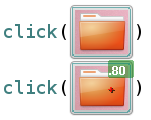

Sikuli Script 實際上就是個 Jython 程式，只不過圖檔名稱在 Sikuli-IDE 裡會直接用圖片（的縮圖）來表現而已。例如下面 IDE 裡的一段程式碼：

實際上的程式碼是：
click("folder.png")  click(Pattern("folder.png").similar(0.80).targetOffset(10,0))
click(Pattern("folder.png").similar(0.80).targetOffset(10,0)) 
預設就是代入圖檔的位置（相對於 .sikuli 資料夾的位置）。
| |
如果有調整過 similarity 或 offset，檔名就會包裝在 Pattern 裡。
|